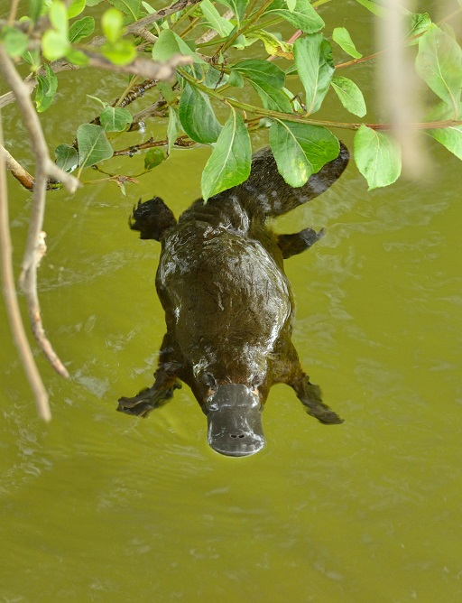
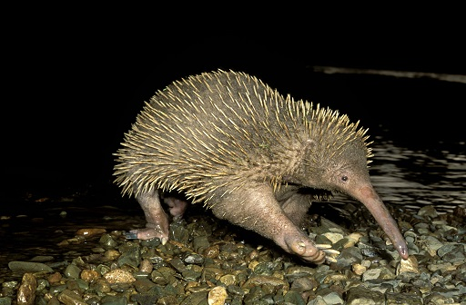
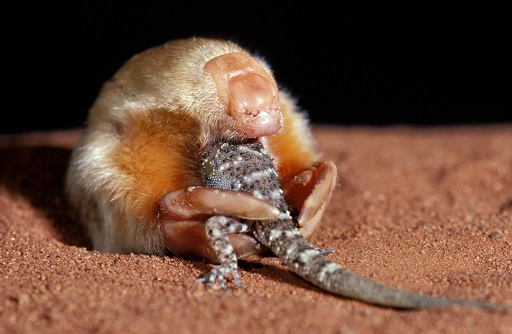

2 Mammalian diversity¶
The Cretaceous period lasted from 145 to 66 million years ago. The end of the period is marked by a mass extinction of both land and marine animals. About 75% of all the species on earth vanished. All the dinosaurs, except for birds, disappeared leaving environments that they had vacated available for mammals to exploit. The cause of this event is thought to be the impact of a comet or asteroid 10 to 15 kilometres wide that left a 180 km wide crater on the Yucatan peninsula. The impact caused a global catastrophe, the result of debris ejected into the atmosphere changing the climate.
Thus, the mass extinctions enabled the early mammals to expand into new habitats, producing an increase in diversity. The wide range of forms that we see today could be attributable to the asteroid impact that ended the age of the dinosaurs. However, recent genomic evidence (Liu et al., 2017) has suggested that mammalian diversification started before the end of the Cretaceous period, perhaps indicating that the asteroid impact was not the only driver for diversity.
2.1 Living mammals¶
The living mammals are divided into three groups, based on their origins from the early mammals of the Cretaceous period. The three groups are monotremes, marsupials and placentals, each a subclass of the class Mammalia. The three groups are distinguished by their differing modes of reproduction.
2.1.1 Monotremes Monotremes diverged from the main group of early mammals in the Lower Jurassic period. There are only five species living today, of which four are echidnas. You will discover more about monotremes in Section 3.

Figure 5 A duck-billed platypus, Ornithorhynchus anatinus (Tasmania, Australia)

Figure 6 Short-beaked echidna, Tachyglossus aculeatus

Figure 7 Eastern long-beaked echidna, Zaglossus bartoni (Papua New Guinea)
2.1.2 Marsupials Marsupials are mostly found in Australia and surrounding regions, but there also some species, such as the opossum (Figure 8), that occur in Southern North, Central and South America. At one time the marsupials were probably much more diverse than they are today. The marsupials that you are probably most familiar with are the kangaroos, wallabies and koalas.

Figure 8 Virginia opossum, Didelphis virginiana

Figure 9 Wallaby (Queensland, Australia)

Figure 10 Koala bear, Phascolarctos cinereus (Queensland, Australia)
There are marsupials that are very similar in habits and appearance to placental mammals, although not closely related. For example, here is a small burrowing marsupial that looks very similar to the European mole.

Figure 11 A marsupial mole, Notoryctes typhlops, eating a gecko
The Tasmanian wolf, Thylacinus cynocephalus, is a top carnivore like the placental wolf, which it very closely resembles. The last Tasmanian wolf died in captivity in 1936 and it is assumed to be extinct, although there are persistent reports of sightings in remote areas of Queensland, Australia. You will read more about marsupials in Section 4.

Figure 12 The last Tasmanian wolf, Thylacinus cynocephalus
2.1.3 Placentals Most of the living mammals are in the subclass of placental mammals. Although there are 19 orders of placentals, most mammals belong to one of six orders, of which the largest is the rodents. One order has only one species, the aardvark. A simplified family tree of placental mammals, based on molecular evidence, is shown in Figure 14.
In this introductory course, the monotremes and marsupials are given particular focus. Although they are far less diverse than the placental mammals, their adaptations – particularly in the area of reproduction – are fascinating and informative.

Figure 13 An aardvark, Orycteropus afer
Figure 14 A simplified family tree of placental mammals based on molecular evidence